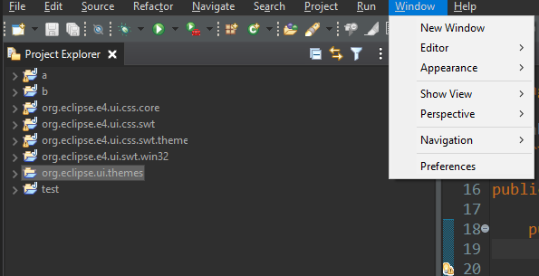
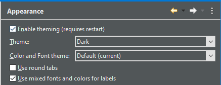
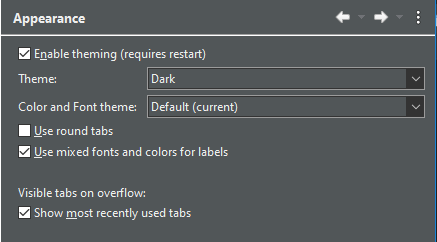

Platform Changes
DeferredImageDescriptor API has been added to JFace
allowing the creation of ImageDescriptor instances from
a URL, where the calculation of the URL is potentially costly
(because it might involve searching through multiple directories or
bundles/fragments on disk).
The new API can be called using
ImageDescriptor.createFromSupplier along with a
Supplier<URL> which will calculate on demand the
URL when the image is acessed for the first time. This allows images
registered at startup in an ImageRegistry to be deferred
until the first time the image is shown on screen.
Old way:
URL url = FileLocator.find(bundle, path);
descriptor = ImageDescriptor.createFromURL(url);
New way:
descriptor = ImageDescriptor.createFromURLSupplier(
() -> FileLocator.find(bundle, path)
);
_ by dashes - and prefixing with hash #.
For example, to reference the system color SWT.COLOR_LIST_SELECTION_BACKGROUND, you can use
#COLOR-LIST-SELECTION-BACKGROUND in your .css files.
SWT Changes
SWT.CHROMIUM constant. Please see this
FAQ entry for details on using the Chromium style browser.
Menu under Windows10 as below:
Old:

New:

On Windows 10, all the dark theme tweaks including the dark menu can be disabled using the
org.eclipse.swt.internal.win32.disableCustomThemeTweaks Java property.
For Example: add this VM argument in eclipse.ini or on the command line after -vmargs:
-Dorg.eclipse.swt.internal.win32.disableCustomThemeTweaks=true
Combo under Windows10 as below:
Old:

New:

On Windows 10, all the dark theme tweaks including the dark combo can be disabled using the
org.eclipse.swt.internal.win32.disableCustomThemeTweaks Java property.
For Example: add this VM argument in eclipse.ini or on the command line after -vmargs:
-Dorg.eclipse.swt.internal.win32.disableCustomThemeTweaks=true